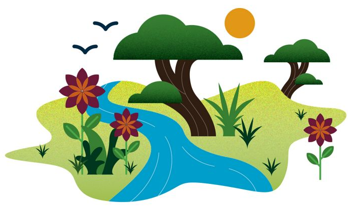

The Go Green is a global environmental nonprofit working to create a world where people and nature can thrive.
Local or organic? Hybrid or electric? Paper or plastic or neither? Nearly all decisions today affect the environment, and figuring out which choices matter most often feels impossible. That’s why we made Go Green, the only modern sustainability site that offers advice, clarity, and inspiration for both the eco-savvy and the green-living novice. With 2.6 million monthly users, Go Green is one of the world’s largest information sites dedicated to driving sustainability mainstream.

Staying informed and making smart choices is critical during this time of environmental change and opportunity. But our nearly 20-year-strong library of sustainability content is here to help. Our articles can give you the confidence to purchase a better dishwasher, build a green beauty routine, or simply learn more about the world around you.
We don’t care if you’re just starting to BYO bags or have been composting for decades, welcome to Go Green. Sustainability for all and bring new Evolution.
Our Mission

To conserve the lands and waters on which all life depends.
Lands and waters are the foundational ecosystems that sustain all living beings on our planet. These interconnected environments are not just geographical features, but complex, living systems that support biodiversity, regulate climate, provide food and resources, and maintain the delicate balance of life on Earth.
Conservation begins with understanding the profound interdependence of ecosystems. Lands are not merely static surfaces, but dynamic environments teeming with microorganisms, plants, and animals that work in intricate harmony. Healthy soils support plant growth, which in turn provides oxygen, sequesters carbon, prevents erosion, and creates habitats for countless species. Protecting these lands means preserving their natural complexity and preventing degradation through responsible land use practices.
Our Vision

A world where the diversity of life thrives, and people act to conserve nature for its own sake and its ability to fulfill our need and enrich our lives.
The vision of a world where the diversity of life thrives represents a profound reimagining of our relationship with the natural environment. It is a holistic perspective that recognizes the intrinsic value of every living organism, from the tiniest microbe to the most complex ecosystems, while simultaneously acknowledging nature's critical role in supporting human existence and well-being.
At the heart of this vision lies a deep respect for biodiversity. Each species, each ecosystem, represents a unique evolutionary story—a complex network of relationships developed over millions of years. Thriving biodiversity is not just about preserving individual species, but maintaining the intricate web of interactions that allow life to adapt, evolve, and flourish. From rainforests to coral reefs, from alpine meadows to desert landscapes, every environment tells a remarkable story of interconnectedness and resilience.